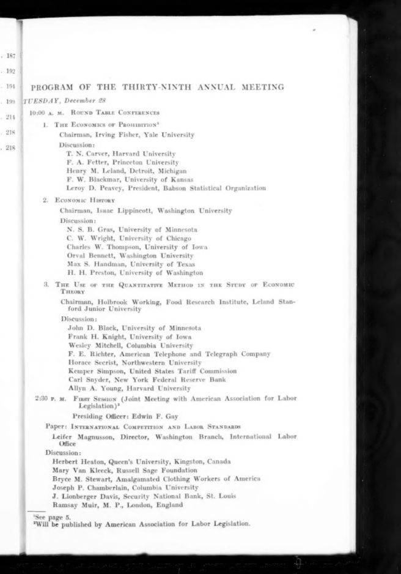

Gephart, 1926: a holding e o investidor
Leitura: 4 min
Gephart defende a holding como resposta à escala da indústria e ao federalismo americano, mas aponta a opacidade de seus títulos e propõe a incorporação federal com contas uniformes.


Quarenta e oito estados com leis próprias sobre empresas e um governo central com controle sobre algumas delas: para W. F. Gephart, apresentado no programa como de St. Louis, esse arranjo federal ajudou a estimular a holding nos Estados Unidos. Na mesa-redonda sobre problemas atuais das sociedades anônimas, ele procurou separar o que a holding tem de necessário do que tem de problemático para quem compra seus títulos.
Por que existem holdings?
Gephart admite que, mesmo sem o federalismo, um país tão extenso e rico em recursos teria favorecido esse tipo de organização. Mas os governos estaduais e federal, concorrentes e em conflito, complicaram o problema e deram razões a mais para a holding. Ele rejeita a visão comum de que holdings seriam sobretudo criações de promotores e banqueiros para captar capital e gerar lucros de subscrição: essa visão ignora a razão básica, que está na grande empresa e nas jurisdições conflitantes.
A holding é um meio de controle unificado e permite as economias das consolidações verticais e horizontais. Nos serviços públicos, onde atraiu mais atenção, a concentração do controle de pequenas usinas ineficientes trouxe grandes vantagens ao consumidor, e as leis de muitos estados, ao restringir a operação a empresas com carta estadual, tornaram a holding o único caminho. Fora dos serviços públicos, a concorrência, real ou potencial, protege o consumidor. Ela também consegue fundos com mais facilidade do que a pequena empresa independente e pode sustentar subsidiárias fracas em períodos críticos.
Onde está o problema?
A crítica bem fundada, diz Gephart, está no valor de investimento dos títulos. Os ativos da holding são em geral ações ordinárias de subsidiárias, sem mercado quando ela detém a maioria, e o único critério de valor é o poder de ganho, conhecido só na forma que a holding decide publicar. Controlando as subsidiárias, ela pode melhorar ou piorar o resultado da controladora aumentando ou reduzindo depreciação e outros encargos acumulativos.
Assim, o investidor aplica quase só com base em seu juízo sobre a administração. Em outras empresas, pode avaliar os ativos por trás de seu título; na holding, a administração passa a ser o fator predominante. Mesmo quem compra títulos de dívida assume, na prática, risco de empresário, porque a obrigação se apoia no poder de ganho de participações, e não em bens físicos desembaraçados. Muitos investidores não sabem disso e compram um título de natureza diferente da que imaginam.
Qual é a solução?
Com leis estaduais conflitantes, há pouca esperança de proteger o investidor. A saída seria a incorporação federal, sobretudo das holdings de serviços públicos, mas defensável para qualquer holding com propriedades em vários estados. Não exigiria uma regulação tão elaborada quanto a da Interstate Commerce Commission sobre as ferrovias, mas permitiria impor contabilidade uniforme e demonstrações financeiras úteis ao investidor inteligente. Também não significaria endosso nem garantia dos títulos, assim como a supervisão das ferrovias não garante a qualidade de seus papéis.
“o máximo que um governo do povo pode fazer, ou se espera que faça” (The most that a people's government can do or ought to be expected to do)
Esse máximo, completa Gephart, na proteção contra maus investimentos, é garantir que os fatos pertinentes estejam disponíveis; quem não os investiga não pode esperar escapar das consequências. Ele antecipa a oposição dos que lamentam a invasão do governo federal sobre os estados e responde que os negócios se tornaram nacionais e que buscar uniformidade nas leis estaduais é tarefa sem esperança.
Na minha leitura
Na minha leitura, o texto identifica com precisão o problema de informação da holding: o investidor compra direitos sobre lucros de subsidiárias cuja contabilidade a controladora pode moldar. A proposta de contas uniformes e relatórios anuais, sem garantia de qualidade dos títulos, é a fórmula de regulação por divulgação que viria a prevalecer.
O argumento econômico a favor da holding, economias de consolidação diante de mercados fragmentados por fronteiras estaduais, convive no texto com o reconhecimento de que a mesma estrutura cria assimetria entre quem controla e quem financia.
Glossário
- Holding
- empresa cujo ativo principal são ações de controle de outras empresas.
- Incorporação federal
- constituição da empresa sob lei federal, e não estadual.
- Encargos acumulativos
- provisões como depreciação, que reduzem o lucro do período e se acumulam no balanço.
Fontes
- Securities of Holding Companies and the Investor — W. F. Gephart (St. Louis) (pp. 31–34). Internet Archive (número completo, PDF)
- Edição completa, com os demais artigos: Nº 202 do Arquivo.
Documento em domínio público (EUA, publicado antes de 1931), via JSTOR Early Journal Content e Internet Archive. Resumo e comentário do autor deste site, sem afiliação com a American Economic Association. Encontrou um erro? Escreva: a correção é publicada no próprio texto, com data.
← Dorau, 1926: quanto custou o capital das ferrovias depois de 1920 ↑ Nº 202 · St. Louis, 1926: juros, sociedades anônimas e o ônibus Walker, 1926: contra a publicidade compulsória das contas →